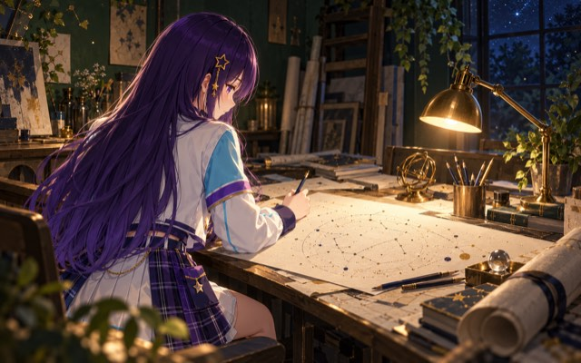
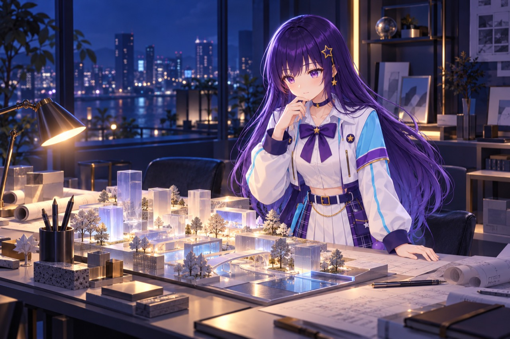

会話とルミナらしさ
ルミナらしい話し方や返事のしかたの案をいくつかまとめて、会話が自然に続くか、話の流れが前後でぶれないかを見ています。
どの案も試している最中で、ルミナにはまだ取り入れていません。長く話したときにどうなるかも、これから確かめます。
DEVELOPMENT · LUMINA
Lumina（ルミナ）は、会話と3D空間での行動をつなぐAIキャラクターの開発プロジェクトです。言葉を交わし、周りの様子をつかんで、その場に合った動きにつなげる。そんなルミナを目指して、試作と検証を重ねています。このページでは、開発の進み具合や測定結果、試作動画をご紹介します。
開発状況：2026年10月15日時点（待ち時間の測定記録は10月8日）
IN PROGRESS · いまの取り組み
いま取り組んでいることを、テーマごとにまとめました。それぞれ、ここまでに試したことと、これから確かめることを分けて書いています。
ルミナらしい話し方や返事のしかたの案をいくつかまとめて、会話が自然に続くか、話の流れが前後でぶれないかを見ています。
どの案も試している最中で、ルミナにはまだ取り入れていません。長く話したときにどうなるかも、これから確かめます。
声を聞いて、返事をして、動く。この流れをひとつにつなぐ準備を、これまでの記録を見直しながら進めています。
声で話したときのやり取りの質や返事の速さは、まだお約束できません。
会話をきっかけに、ルミナが周りを探し、ソファへ歩いて座るまでをつないだ試作です。
記録と映像の見比べも、立ち止まったり向きを変えたりするときの動きのつながりや自然さも、これから確かめます。
ルミナを動かす仕組みを軽くするために、いくつかのやり方を試しています。
やり方ごとに速さや安定性がどうなるかは、まだ確かめきれていません。
どれも開発の途中です。
01 · RESPONSE EXPERIENCE
数字だけでは伝わりにくい「待ち時間」を、体験できるようにしました。開発中の会話システムで実際に測った20回分の待ち時間を、ボタンを押して再現できます。
下のボタンを押すと、
番号を押すと、その回の待ち時間を再現できます。20回のうち15回は1秒台、5回は約7秒で、水色のマスがその5回です。
ここでは記録しておいた待ち時間を再現しているだけで、AIに質問を送ったり、その場で返事を作ったりはしていません。声で返事をするまでの時間も含みません。再現される時間は、表示の具合でずれることがあります。
各回の秒数（1回目から順に）：7.727 / 1.197 / 1.173 / 1.594 / 1.463 / 1.320 / 1.073 / 6.966 / 1.171 / 1.473 / 1.317 / 7.181 / 1.229 / 1.207 / 1.575 / 7.186 / 1.375 / 1.182 / 1.197 / 7.200
02 · UNDERSTANDING & ACTION
「会話からソファへ」の試作では、ルミナが周りを探してソファに座るところまでを、ひと続きにつないでいます。
ただ、ねらいどおりに自然に動けているかの確認は、これからです。歩き方も、お手本になる動きを調べて改善しているところです。
返事ができることと、周りの様子をわかったうえで自然に動けること。その両方を、実際の動きを見ながら磨いていきます。
話の流れをくみ取って、いろいろな話題に応える。返事を待つ時間も短くして、言葉のキャッチボールが自然に続く会話を目指しています。
目の前に何があって、いまどんな状況なのか。見えているものを手がかりに周りの様子をつかみ、その場に合った反応につなげていきます。

（大きな画像を開く）目指す場所まで、どう進めばいいのか。周りを見て動き方を選び、通れないところがあれば道を考え直す。そんなふうに自分で判断して動けるかを、試しています。
03 · RELEASE
実際にルミナと話せる3D体験版は、公開の時期がまだ決まっていません。
2026年9月27日収録の
ルミナが3D空間で動く試作版で収録しました。画面の会話欄に返事が出たあと、ルミナが周りを探してソファまで歩き、腰を下ろすところまでが映っています。
最初から最後まで、早送りせずに収めています。起動した直後の画面や、返事を待つ時間も入っています。見た目や動き、画面に出る文字や数字は、収録した時点の試作版のものです。
この映像から、いまのルミナの仕上がりや、声で返事をするまでの速さがわかるわけではありません。収録した時期も使っていた仕組みも、上の「返事までの時間」を測ったときとは違います。
前髪と髪の質感を調整した最新版モデルを、配信アプリへ反映したあとの映像です。保存していたARDYの動作データを使い、実際に歩いて止まり、その位置からまた歩くところまで確認しました。原画への見た目の近さと、歩き方の自然さは引き続き調整しています。
今回は保存済みの動作を再生した検証です。新しい動作を生成する処理や、マイクで話しかけて返答を聞くまでの連携は、まだ確認できていません。
04 · FAQ
いまのところ、このサイトでルミナと話すことはできません。このページの「待ち時間を体験する」は、測った待ち時間を再現するだけで、AIが返事を作っているわけではありません。ルミナと話せる3D体験版は、公開の時期がまだ決まっていません。
いいえ。1.35秒は、今回の条件で20回測ったときの中央値（速い順に並べたときに真ん中にくる2回の平均）です。最短は1.07秒、最長は7.73秒でした。質問の内容やそれまでの会話、そのときの状況によって変わります。
まだ測っていません。今回の数字は、文章で返事が届くまでの時間です。こちらの声を聞き取る時間や、ルミナが返事を声にして話す時間は含んでいません。
いいえ、まだ開発中です。会話から動きにつなげる試作を進めながら、ねらいどおりに、自然に動けるかを確かめています。歩き方も少しずつ改善しています。

05 · DEVELOPMENT LOG
会話の履歴がうまく整理されているかを調べる機能を試作しました。テスト用に用意した会話で動かしたところ、これまでのやり方と同じ結果になりました。開発中の会話システムにはまだ組み込んでおらず、声を使ったやり取りでも試していません。
記録しておいた歩き方のデータを同じ基準で分析し直し、計算に誤りがないかを調べました。立ち止まったり向きを変えたりしながら歩き続けたときに自然に見えるかは、まだ確かめていません。
06 · LATEST PROGRESS
紹介用のイラストを新しくし、動画・開発状況・ガイドラインのページを見直しました。画像を拡大して見る操作と、試作動画の再生をブラウザーで確認しています。
会話を終えたり途中で中断したりするときの処理を修正し、会話を扱う仕組みに取り入れました。テストと実際の通信で確認しています。声でのやり取りや長く続けた会話の品質は、引き続き確かめています。
前髪と髪の質感を調整したモデルを配信アプリに反映し、歩行・停止・その場からの再開を確認しました。検証動画も最新版に更新しています。Blender原本を保存し、原画への見た目の近さをさらに詰めています。3D体験版の公開時期はまだ決まっていません。